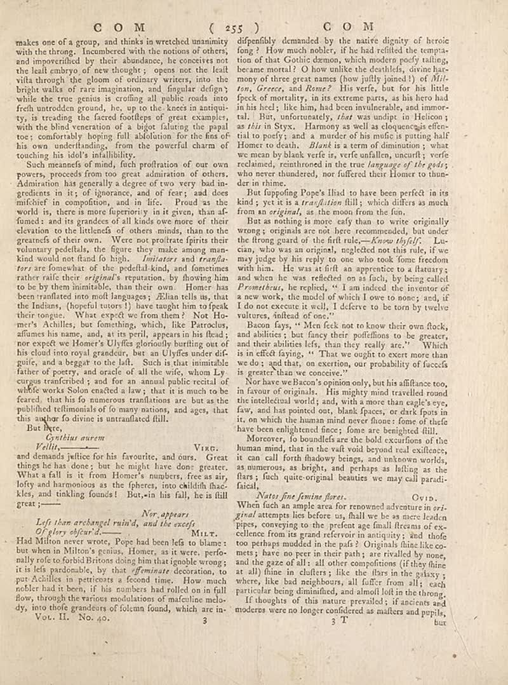

page-2448-f5e4884f245d.jpg

Page ID: britannica:309f765b1ecc83e0a7f7762e44b4a927a7555443:train:2448
Running head: **C O M ( 255 ) C O M**
Image SHA-256: f5e4884f245dcd6ad7cc397797014544877dd30c843c6dde29d97203b6b52245

**C O M ( 255 ) C O M** [Page-header]
makes one of a group, and thinks in wretched unanity with the throng. Incumbered with the notions of others, and impoverified by their abundance, he concecites not the leaf embryo of few thoughts: open out the life wilts through the glown of ordinary writers into the bright walks of rare imagination, and singular design while the true genius is crafting all public roads into fresh untenden ground, like, up to the knees in antique try, is treading the faced foodless of great examples, with the blind-versation of a bigot faluting the papal too; comfortably hoping full: solutions for the fine on his own understanding, from the powerful charm of touching his idol's infallibility. Such meanings of mind, fact profission of our own power, proceeds from too great admiration of others. Admiration has generally a degree of two very bad in-gedcters in its: if ignorance, and or fears, and does mifcher in compoffion, and in fic. Proof as the world is, there is more foperiously in it given, than af-funds: and its grandes of all kinds owe more of their elviation to the litlands of others minds, than to the greatest of their own. We no podficate spirit their voluntary pedefells, the figure they make among mankind would now find a high. _Infinityer and transfi-_ are forehead what the pedefull kind, and sometimes rather raife their _original’s reputation_ by flowing him to be by them immobile, than their own. Homer has been tradition into mid languages: Allan tells this, that the Indians, (hopeful tutors!) have taught him to speak their tongue. When expect we from them? Not Ho-mer's Achilles, but formething, which, like Parrocius, affumes his name, and, at its peril, appears in the dead nor expedite women’s Ulyfles gloriously betting out of his cloud too royal grandeir, but an Ulyfles under dis-guir, and a begant to our left. Such is that immurable father of poetry, and oracle of all the wife, whom Lycusgis transformed, and for an annual public record of wife works Solon enacted a law, that it is much to be feared, that his fo numerous translations are but as the published tellimomials of fo many nations, and ages, that this author to divine is untraflated fill. But here, _Gristhus nurem_ _Ville -_ Vare. and demands justice for his favourite, and ours. Great things he has done; but he might have done greater. What a fall is is from Home’s eures, free as air, lofy and harmonious as the fpherer, into chillich face kies, and tinkling found! But,-in his fall, he is ill great
Nor appears [Section-header]
_Left than archangel ruin'd, and the exact_ Of _Ivyself._ Had Milton never wrote. Pope had been felt to blame; but when in Milton’s genius. Homer, as it were, perfoally role to boriblighters doing him that google wrong; it is lels paradisable, lay that _affirmish_, decoration, to par Achilles in petticas a second time. How much nobler had it been, if his numbers had rolled on in fall flow, through the various modulations of maculoline melo-dy, into those grandeurs of folcmn found, which are in Vor. H., No. 40. 3 dipenfully demanded by the native dignity of heroic fong? How much nobler, if he had refilled the tempta-tion of that Gootile demos, which modern poody talking, because moral! I don willke the doubtlets, divine har-many of three great names (how jully joined) of _Wil- ton, Greece,_ and _Rome?_ His verfe, but for his little feck of mortality, in its extreme parts, as his hero had in his heel; like him, had been insulterable, and imoro-tal. But, unfortunately, _that_ was undute to Helicon; as _this_ in Stryx. Harmony as well as duquencais effen-tial to potify, and a murder of a number of us about you. We made by blank verfe is, verfe unfallen, uncurlt; verfe reclaimed, remithrored in the true _language of the girls_ who ever understood, not suffered their Homer to thunder in rhime. But topping Pops: His to have been perfect in its kind; yet it is a _translation_ filly, which differs as much from an _origini_, as the moon from the fun. But as nothing is more caly than to write originally wrong; originals are not here recommended, but under the theory graed of the fruit rule--_Know _byful/_ La- cian, who was an original, neglected not this rule, if we may judge by the reply to one who took fone freedom with him. He was as first a happened to a fortury; and when he was reflected on as fach, by being called _Premichaela_, he applied, "I am indeed the inventor of a new work. He model of which I owe to mine, and, if I do not execute it well, I deferve to be tom by twelve vulures, instead of one." Bacon fays, " Mer feek not to know their own flock, and abilities, but fancy their puffellions to be greater, and their abilities lets, than they really arc." Which is in effect dying. " That we ought to exert more than we do, and that, on exertion, our probability of fuccefs is greater than we conceive." Now have welcom soon only, but in different too, in favor of originals. His puppy mist travelled around the intellectual world; and, with a more than eagle’s eye, fairy, and has pointed out, blank places, or dark spots in it, on which the human minder house flows of thefe have been embrightened faces; Some are being fulfilled. Moreover, to boundless ear the bold excursions of the human mind, that in the vail voit beyond real coffences, it can call forth shadowy beings, and unknown worlds, as numerous, as bright, and perhaps as falling as the flats , fuch quite-original beatuities we may call parodi-faical.
Nates fine feminine facets [Section-header]
When fish an ample area for renowned adventure in ori-gird attempts lies before on, frail we be as mere denim types, conserving to the prent age final fireman of ex- excellence from its grand referoir in antiquity; and thole too perhaps mudded in the pafs / Originals due likeoc-nuts; have no more teeth and, yet stalled by none, and the gaze of all: all other compotions (if they hine at all) fine in clafers; like the flies in the galaxy; where, like bad neighbours, all suffer from all; each particular being diminished, and should loft in the thing. If thoughts of this nature prevailed; if ancients and moderates were no longer confidered as matters and pupils, T